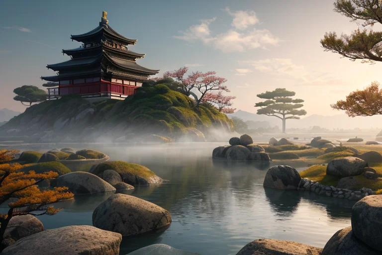
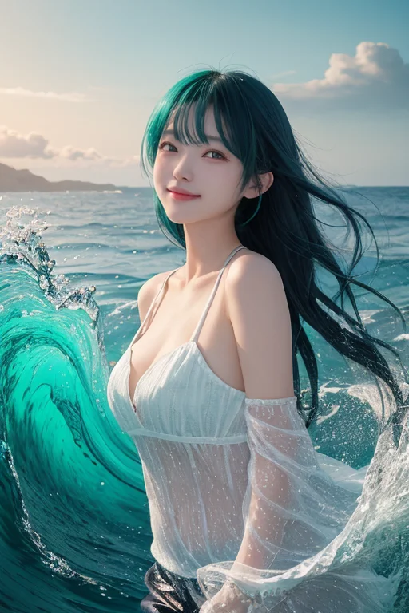
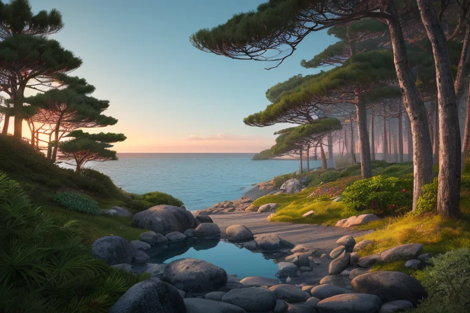
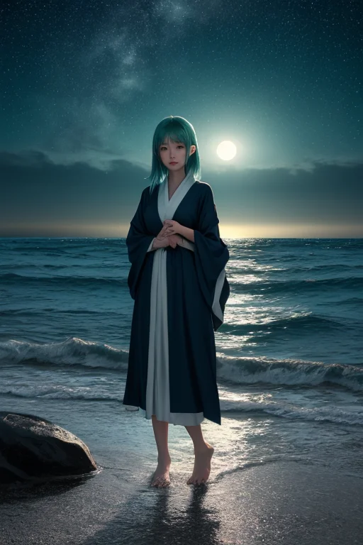
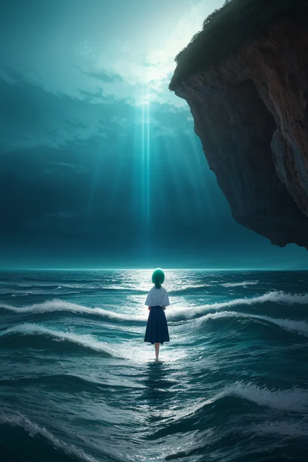

第一章 現実の高知
あなたはまだ気づいていない。この土地にも、王がいることを。
室戸岬の断崖に立つと、世界の果てに来たような錯覚に襲われる。陸と海の境目が、ここではあまりに鮮烈だ。打ち寄せる波は、悠久の時間をそのまま切り取ったように、静かに、しかし確実に岩を削り続けている。岬の先にある御厨人窟（みくろど）は空海が修行した聖地と言われる。洞窟の奥は深い闇に沈み、潮の香りと、どこか冷たい石の気配が漂う。訪れる人は少なく、ただ風と波の音だけが、この場所の持つ重い時間を伝えている。
歪みの列島、日本。この岬の下では、プレートが複雑に絡み合い、巨大な力が蓄えられている。いつか来るべきその時のために、微調整は絶え間なく続けられていた。誰にも知られることなく。誰にも感謝されることなく。ただ、この静寂の中に溶け込むように。
自由とは、このような孤独の別名なのだろうか。誰の制約も受けない代わりに、誰の理解も、誰の共感も得られない。海原を見つめるその視線の先には、答えはなく、ただ広大な青が広がっているだけだった。

第二章 歪みの兆候
室戸岬の断崖に立つ彼は、足元の岩盤に伝わる微かな軋みを感じ取っていた。ユーラシアプレートとフィリピン海プレートの境界。ここは、自由そのものが地殻に刻まれた場所だった。奔王コウチリア・フリーダムは、目を閉じる。視界の裏側に、無数の「祈り」の光が浮かび上がる。土佐の人々の、海への畏敬、山への感謝、生きることへの率直な願い。それらの感情の粒子は、この土地の特異な感情密度によって、妖精たちの調整エネルギーへと変換される源だった。
しかし今、その流れに乱れがある。祈りが、どこか不安定だ。本来は海原のように広く深いはずのエネルギーが、細かく揺らぎ、濁流のように渦を巻いている。自由を求める強すぎる意志が、かえって内なる枷となり、孤独という名の静かな海溝を生み出しているのか。彼はその感覚を、かつおのたたきを喰らう時の、あの一瞬の「自由」の痛みに重ねた。解放は、常に何かを断ち切る行為と隣り合わせだった。
「王よ」
主席妖精フリダの声が、風を切って届く。彼女の表情には、普段の豪快さはなく、海流図を示す光の幕が焦りのようにちらついている。
「四万十川、仁淀川の水流に、予測不能な乱流が発生。これは……人の心の『うねり』が反映されている」

第三章 王の葛藤
桂浜の松林に身を隠し、コウチリアは静かに目を閉じた。フリダの報告は、彼の内側に確かな「うねり」を呼び起こしていた。自由民権運動がこの地で胎動した時、人々は何を断ち、何を得ようとしたのか。坂本龍馬が海を見つめていたその視線の先には、果てしない孤独があったのではないか。
彼は己の内面に耳を澄ませた。そこには、四万十川の清流のように澄んだ「自由」への希求と、その実現がもたらす必然的な「隔たり」が、静かに共存していた。王としての役割は微調整に過ぎない。巨大な歪みを前に、無力さを噛みしめることしかできない。この認識こそが、彼に感情をもたらした最初の「痛み」だった。
自由とは、他者からも、時には自分自身からも解き放たれる行為だ。その先に広がる海原は、あまりに広く、静かすぎる。彼は、よさこいの太鼓の響きが町を満たす熱気を、懐かしむように思い浮かべた。あの轟きの中にこそ、孤独を癒す「何か」があった。彼はまだ、その正体を言葉にできなかった。

第四章 妖精との対話
桂浜の波音だけが、夜の闇を切り裂く。奔王は岩の上に座り、足元で砕ける波の白さをぼんやりと見つめていた。感情という名の波が、彼の内側でも静かに砕けている。
「王よ」
背後から響く声は、いつもの豪快さを欠いていた。主席妖精フリダが、同じ岩肌に腰を下ろす。彼女の目は、水平線の彼方を見据えている。
「あんたは今、『自由』の重さに溺れかけとる」
奔王は答えない。フリダは続けた。
「俺たちは、祈りを微調整する者や。津波を数秒遅らせ、逃げる時間を紡ぐ。揺れを一段階、ほんの少しだけ和らげる。それは、人間の魂が折れんようにするための『間』を作る作業や。自由も同じやと思うてる」
彼女は仁淀川の清流を思わせる澄んだ声で言った。
「自由とは、全ての選択が己に返ってくる海原や。そこには確かに孤独がある。でもな、その孤独の中に立った時、初めて、己以外のものと『響き合う』準備が整うんや。よさこいの轟音も、酒宴の歓声も、全ては孤独という静寂を土台に、初めて意味を持つ光や。あんたが感じ始めた痛みは、孤独そのものじゃない。『響き合いたい』という、魂の最初の震えや」
波音が、彼らの沈黙を包み込んだ。

第五章 微調整と余韻
室戸岬の断崖に立つ奔王は、目を閉じていた。彼の内側では、自由の翼が広がり、この土地の精神的な「歪み」を感知している。それは、あまりに広い自由ゆえの孤独、他者と響き合えないもどかしさという、目に見えない波だ。彼はそれを消すことはしない。ただ、微かに調整する。孤独の鋭さを少しだけ和らげ、それが内省へと向かう角度をほんの少し修正する。それは、津波の到達を数秒遅らせるのと同じ、静かな業だった。
四万十川の清流は、その調整の余韻を運ぶ。仁淀川のブルーは、深い静寂を映す。彼はもう、感情を持たない存在ではない。この土地の、酒宴の熱とよさこいの轟音、そしてその間にある深い沈黙が、彼に「痛み」と「慈しみ」を教えた。
自由とは孤独か。彼は今、問いに答える代わりに、孤独が響き合いへの希求に変わる瞬間を、そっと整え続けている。海原は広く、静かだ。
あなたの町にも、王がいる。